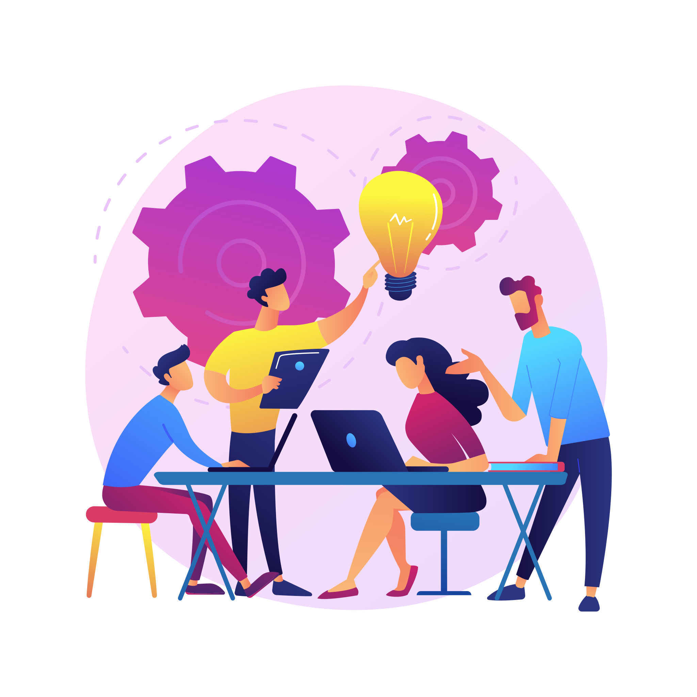

Travailler dans une équipe informatique
La collaboration et le travail en équipe sont des compétences indispensables pour mener à bien des projets complexes. Travailler dans une équipe informatique ne se limite pas seulement à la mise en commun de compétences techniques. Cela implique également une communication efficace, une gestion proactive des conflits, une organisation méthodique et une capacité à s'adapter aux différentes dynamiques de groupe.
Ressources
Parmi les enseignements reçus, deux ressources m’ont particulièrement aidé à comprendre l’importance d’une bonne communication et les responsabilités qui en découlent. Travailler efficacement au sein d'une équipe nécessite un ensemble de compétences variées qui facilitent le travail en groupe.
- La communication
- La collaboration
- Être diplomate
- Être responsable
- Avoir confiance en soi
- Avoir du leadership
Chacune de ces compétences est indispensable dans un travail d’équipe, sans quoi on risquerait de mettre le projet en péril en raison du manque de communication et de leadership. Peu importe l’objectif d’une SAÉ, les règles du travail en équipe restent les mêmes pour chaque membre du groupe afin d’optimiser l’efficacité des livrables.

Implication
Durant les différentes SAÉ au cours de l’année, j’ai eu l’occasion d’améliorer mes compétences en gestion de groupe en communiquant régulièrement avec mes coéquipiers via des plateformes de communication ou directement en présentiel afin d’avoir des rapports plus humains et d'améliorer notre synergie. La difficulté de nos projets nous a poussés à la collaboration et à un esprit d’équipe à toute épreuve. La répartition des tâches est un moment délicat lors d’un projet car elle peut parfois mener à des conflits. C’est dans ces moments qu’il faut affirmer son leadership et être diplomate afin de trouver un accord équitable pour chaque membre de l’équipe.
Apprentissage
En raison de mon manque d’expérience en travail d’équipe avant ma première année d’études supérieures, je possédais des lacunes en communication, leadership et diplomatie. Les rapports entre coéquipiers m'ont fait grandir d’un point de vue humain. Le partage de connaissances avec les membres les plus expérimentés m'a permis de développer mes compétences interpersonnelles et techniques, d’apprendre à mieux écouter et à m’exprimer de manière plus claire et efficace. Travailler en équipe m'a également appris l'importance de la coopération et de la flexibilité, tout en renforçant ma capacité à gérer les conflits de manière constructive.
Lors des premières SAÉ, je n’osais pas aller de l’avant et m’affirmer pour proposer différentes idées afin d’apporter un point de vue neuf. Aujourd’hui, je suis à l’aise pour collaborer avec des personnes différentes, chacune possédant sa manière de travailler et de voir les choses, ainsi que pour résoudre des conflits et, surtout, communiquer de façon efficace. Je possède toujours des lacunes dans mon leadership et ma confiance en soi, que je pense pouvoir combler en apportant des solutions techniques abouties et en les présentant à l’équipe entière lors de réunions.
Pour de futures projets je pourrai améliorer mes qualités de leadership en m’investissant dans l’avancé des tâches des membres et en proposant plus régulièrement des suggestions afin d’aider le plus possible l’avancer d’un projet. Et la gestion du temps qui est parfois décousu et qui amène à un manque d’efficacité et de responsabilité. Pour ce faire je pense utiliser gantt project et une to do list, l’utilisation des ces outil permet d’avoir un travail plus organisé et augmenté son efficacité.